Faber Castell Vierfarbstifte
Stand: 07.06.2026
A.W. Faber-Castell (1761-Heute)
1761 gegründet hieß die Firma lange Zeit A. W. Faber, benannt nach dem Sohn des Gründers, Anton Wilhelm Faber (1758 – 1819), welcher die Fabrik 1784 übernahm.Durch die 1898 erfolgte Heirat der Enkelin Lothar Fabers (der damalige Inhaber) mit Graf Alexander zu Castell-Rüdenhausen wurde der Faber-Castell-Name geprägt und wenig später im Firmennamen aufgenommen.
Der "offizielle" Namenswechsel zu A.W. Faber "Castell" Bleistiftfabrik fand allerdings erst 1928 statt.
1942 änderte man den Namen dann zu A.W. Faber-Castell.
2000 wurde eine große Umwandlung vorgenommen und A.W. Faber-Castell vielfach aufgeteilt. In diesem Zuge wurde die Faber-Castell AG gegründet, welche - meiner Auffassung nach - mittlerweile die Produktion übernommen hat. Hiermit wurde also erstmals das A.W. fallengelassen.
Johann Faber (1878-1942)
1878 gründete Johann Faber, der Bruder von Lothar Faber, die gleichnamige Fabrik als Konkurrenz zu A.W. Faber.1932 schlossen die beiden Firmen sich aber wieder geschäftlich zusammen, bis Johann Faber 1942 von A.W. Faber übernommen wurde.
Mehrfarbstifte
Schon seit den frühen Jahren der deutschen Mehrfarbstift-Industrie verkauften A.W. Faber und Johann Faber diese.Manche Stifte hatten mehrere Versionen, welche hier ausgelassen sind.
| Verkäufer: | Johann Faber |
|---|---|
| Produktnummer: | ? |
| Verkaufszeitpunkt: | Um 1900 |
| Bemerkung: | Die gängige Form von Mehrfarbstift zu dieser Zeit, erstmals in England erfunden. Man schiebt einen beliebigen Minenhalter vor und dreht an dessen Spitze, um die Mine vorzubringen. |
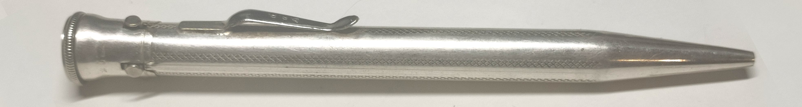
| Verkäufer: | a) A.W. Faber | b) Johann Faber |
|---|---|
| Produktnummer: | a) 01632 | b) 8011 |
| Verkaufszeitpunkt: | a) 1936 | b) 1936, 1937, 1939 |
| Bemerkung: | Wohl Exklusivprodukt für Faber. Mit Auswahl am Drehknopf und Vorschub durch einen einzigen Schieber. Dieser Betätigungsablauf war bei mehreren Stiften bekannt. |
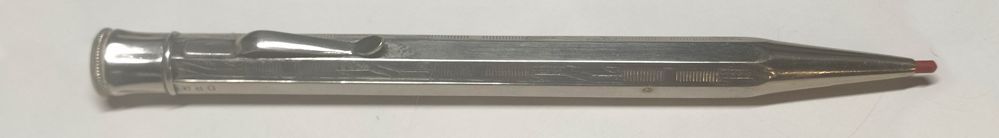
| Verkäufer: | a) A.W. Faber | b) Johann Faber |
|---|---|
| Produktnummer: | a) 01630 | b) 8010 |
| Verkaufszeitpunkt: | a) 1935, 1936, 1940 | b) 1936, 1937, 1939 |
| Bemerkung: | Einer der meistgenutzten Mechanismen zu dieser Zeit. Die Drehkappe wird nach links gedreht, um die Mine zu wechseln. Dreht man nach rechts, wird die ausgewählte Mine stufenlos vorgeschoben. |
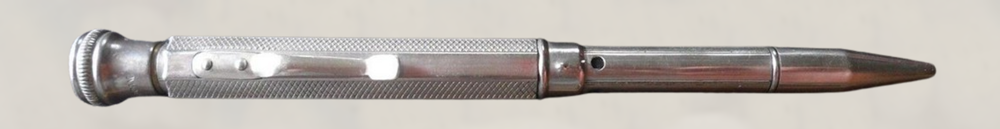
| Verkäufer: | Johann Faber |
|---|---|
| Produktnummer: | 8004 |
| Verkaufszeitpunkt: | 1936, 1937 |
| Bemerkung: | Version des Four in Hand. Ein Teleskopstift: Auseinanderziehen, Hülsen verdrehen und Zusammenschieben für stufenlosen Vorschub. |
| Verkäufer: | A.W. Faber-Castell |
|---|---|
| Produktnummer: | 33/50 |
| Verkaufszeitpunkt: | 1952, 1956, 1960, 1961 |
| Bemerkung: | Wohl Exklusivprodukt für Faber. Funktioniert wie 01630 bzw. 8010. |
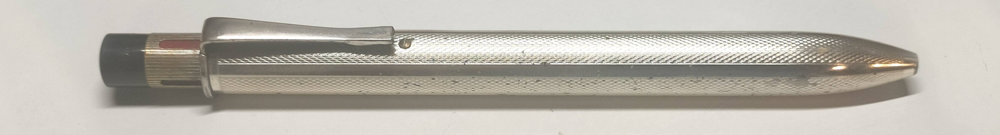
| Verkäufer: | A.W. Faber-Castell |
|---|---|
| Produktnummer: | 33/75 u.v.m. |
| Verkaufszeitpunkt: | 1952, 1956, 1960 |
| Bemerkung: | Wohl Exklusivprodukt für Faber. Drehen an Drücker zur Farbauswahl, Niederdrücken für Vorbringen des Minenhalters. Vorschub der Mine durch Drehen am vorgeschobenen Minenhalter. (->Anleitung Minenwechsel |
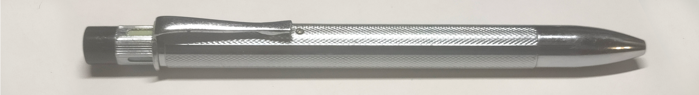
| Verkäufer: | A.W. Faber-Castell |
|---|---|
| Produktnummer: | 36/17 |
| Verkaufszeitpunkt: | 1956, 1960 |
| Bemerkung: | Kugelschreiberversion des 33/75. Bemerkenswert und unpraktisch sind die lediglich 45mm langen Kugelschreiberminen - kürzer als D1. |
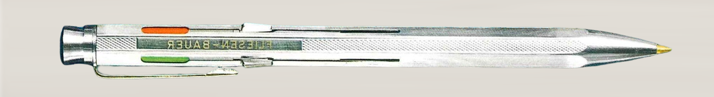
| Verkäufer: | A.W. Faber-Castell |
|---|---|
| Produktnummer: | 33/55, ab 1962 33/24 |
| Verkaufszeitpunkt: | 1961, 1962, 1965 |
| Bemerkung: | Verbreiteter Werbekugelschreiber-Typ mit Sperrhülsenmechanismus. Hersteller ist unklar, bekannte deutsche Hersteller des Mechanismus sind Fend und Waldmann. |
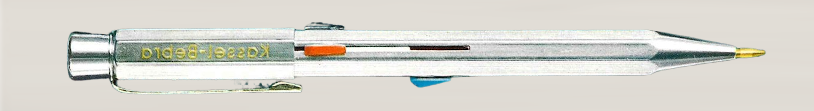
| Verkäufer: | A.W. Faber-Castell |
|---|---|
| Produktnummer: | 33/44 |
| Verkaufszeitpunkt: | 1965 |
| Bemerkung: | Verbreiteter Werbekugelschreiber-Typ mit Sperrhülsenmechanismus. Hersteller ist unklar, bekannte deutsche Hersteller des Mechanismus sind Fend und Waldmann. |
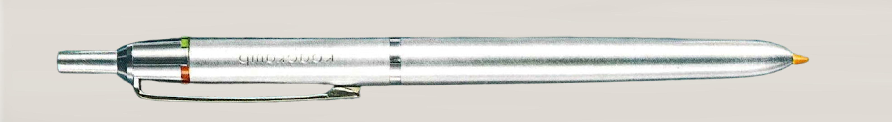
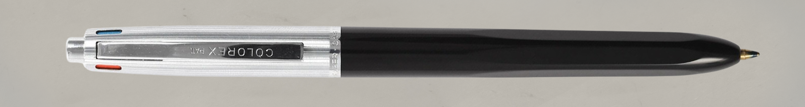
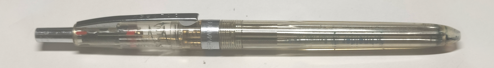
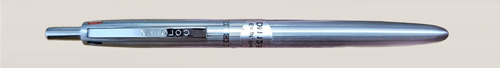
| Verkäufer: | A.W. Faber-Castell |
|---|---|
| Produktnummer: | 'Colorex' a) 36/54 | b) 36/60 | c) 36/64 (Demonstrator-Version) | d) 36/66 u.v.m. |
| Verkaufszeitpunkt: | ac) 1965 c) 1966 Bis Anfang 1980. |
| Bemerkung: |
Sichtwahlmechanismus-Kugelschreiber, der mechanisch identisch auch von Staedtler und Pelikan genutzt wurde. Auszuwählende Farbmarkierung nach oben zeigen lassen und bei schräger Neigung den Druckknopf drücken. Ein gewöhnlicher Zahnkulissenmechanismus sorgt fürs hörbare Einrasten. Als möglicher OEM kommt Mutschler in frage. Von 1972 bis 1974 wurde eine 3-farb-Version verkauft. |
| Verkäufer: | Faber-Castell |
|---|---|
| Produktnummer: | 'TWICE' |
| Verkaufszeitpunkt: | ~2010er |
| Bemerkung: |
Gewöhnlicher Zweifarb-Drehkugelschreiber. Erstmals wurde dieser Typ Mechanismus 1935 von Waldmann genutzt (siehe Farbenautomat). Herkunft wahrscheinlich Ostasien (Japan, China, Taiwan) |
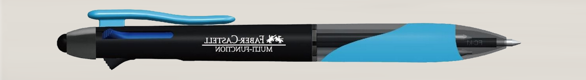
| Verkäufer: | Faber-Castell |
|---|---|
| Produktnummer: | 'Multi-Function' |
| Verkaufszeitpunkt: | ~2010er-2020er? |
| Bemerkung: |
Gewöhnlicher Schieber-Rastmechanismus mit 2 Kugelschreiberminen und 1 Druckbleistift. Bei vorgeschobenen Druckbleistift-Halter kann die Mine durch Drücken auf das Hinterteil stückweise vorgeschoben werden. Anscheinend ausschließlich für den Export, z.B. nach Südamerika. Herkunft wahrscheinlich Ostasien. |
Unbekannte und nicht realisierte Mehrfarbstifte
1939 ist ein Zweifarben-Drehstift 8005 bei Johann Faber gelistet.Falls Sie diesen Stift kennen/besitzen, bitte kontaktieren Sie mich mit einem Bild!
Zwischen 1964 und 1968 wurden von Edgar Gössel für A.W. Faber verschiedene Zweifarb-Kugelschreiber-Konzepte angemeldet, welche wohl niemals hergestellt wurden.
Es soll ein günstig herzustellender Kunstoffkugelschreiber erfunden werden, der mit einer Kurvenbahn und darin laufender Kugel verriegelt (wie beim einfarbigen Schmidt-Mechanismus).
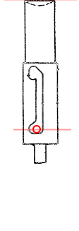
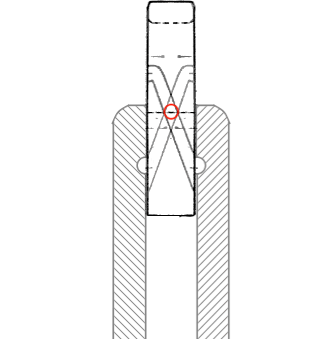
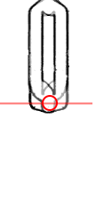
Darauf folgten 1969 und 1970 drei interessante Sichtwahl-Konzepte von Werner Kranich.
Eines davon, DE1809398, entspricht äußerlich dem Colorex. Es ist nicht das Colorex-Patent, da der Mechanismus deutlich anders ist und der Colorex bereits mit 'Patent'-Aufschrift auf dem Markt war. Das Colorex-Patent muss noch gefunden werden.